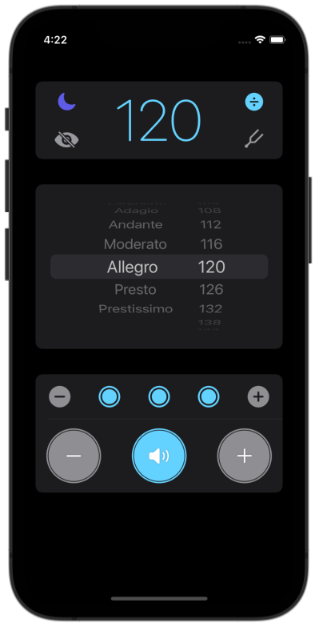

Nova Metronome
Developed by a music teacher, Nova Metronome is designed to be simple and practical. It has a no-fuss interface and it's easy to use when practicing, both for beginners and professional musicians.
Features
- Elegant, clear, and simple design
- Tempo marks and numbers like a traditional metronome
- Large, easy-to-tap adjustment buttons
- The beat can be subdivided
- Subdivisions can be toggled on and off to create different rhythms
- A visual 'pendulum'
- Two tuning reference pitches: A4 and B-Flat4
- Light and Dark mode
- Screen does not go to sleep while using the metronome
Specifications
- BPM 40-208 using Maelzel's scale
- Beat subdivision: none, 2, 3, and 4
- Appearance modes: Dark, Light, and 'same as phone'
- Tuning reference pitches: A4=440Hz and B-Flat4
Privacy Policy
This app does not collect, store, transmit or use any user data.
© Thomas Foster 2022